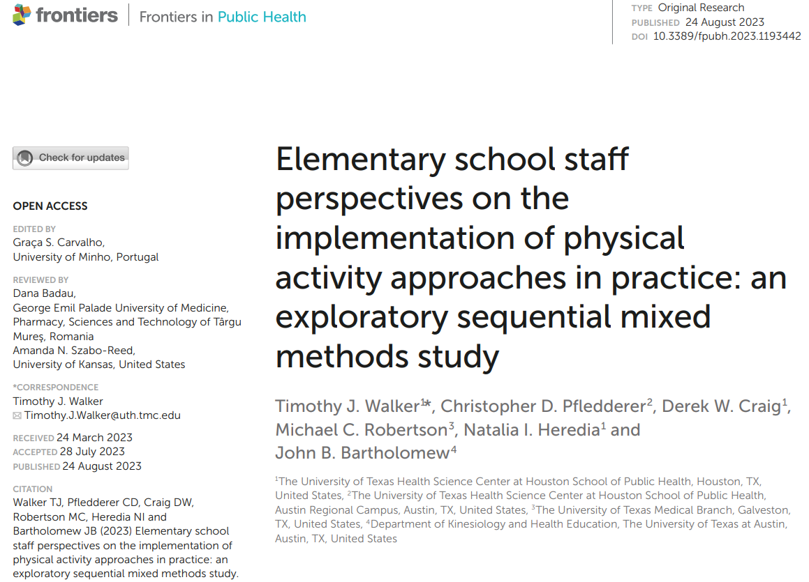
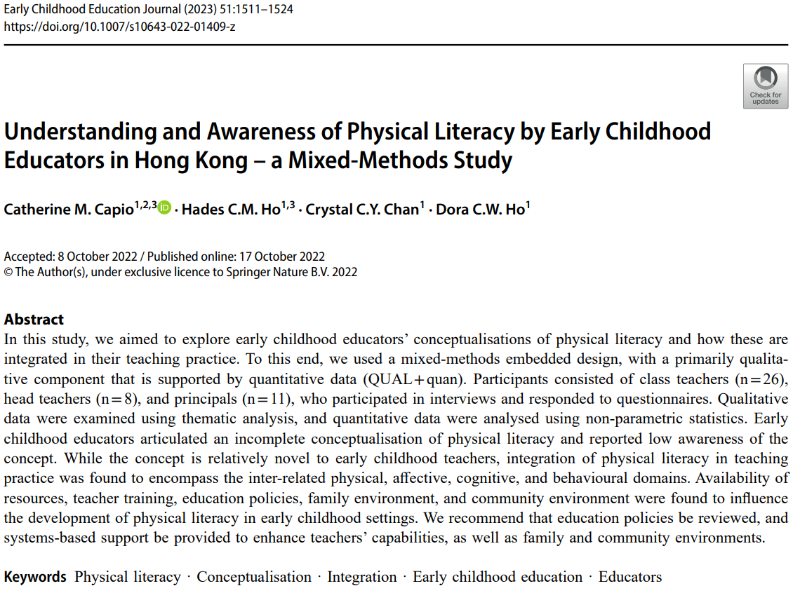
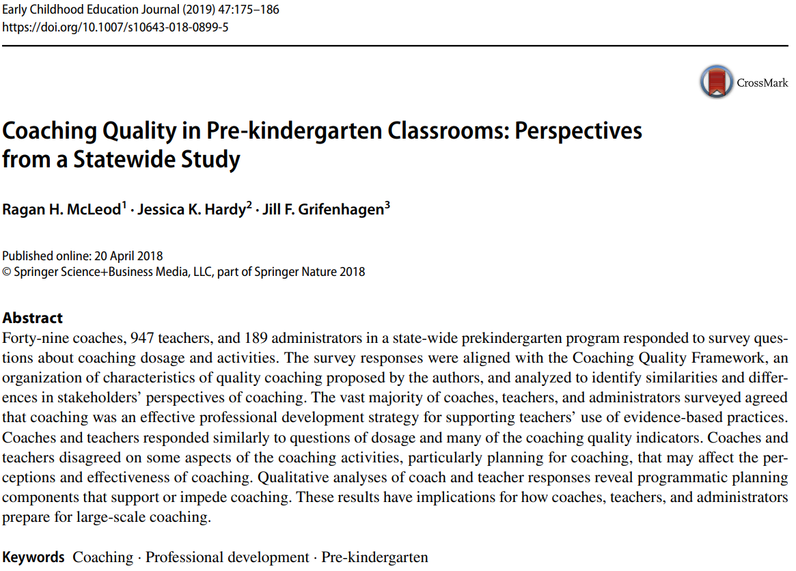
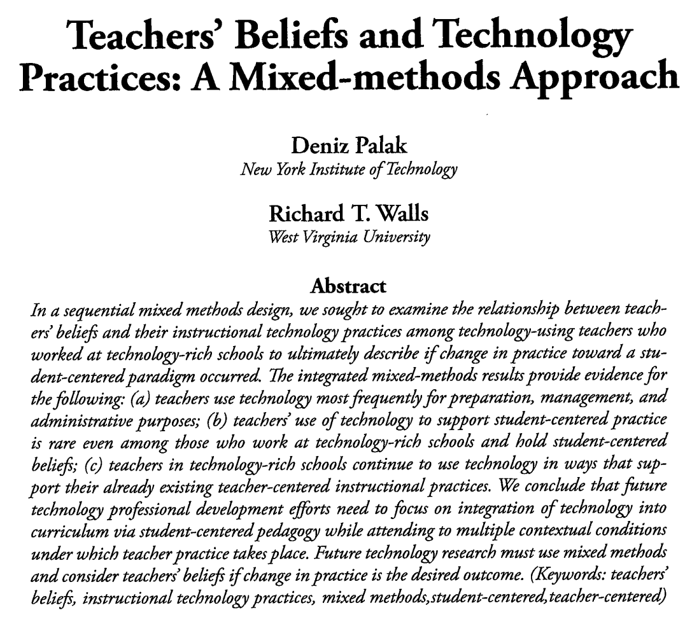
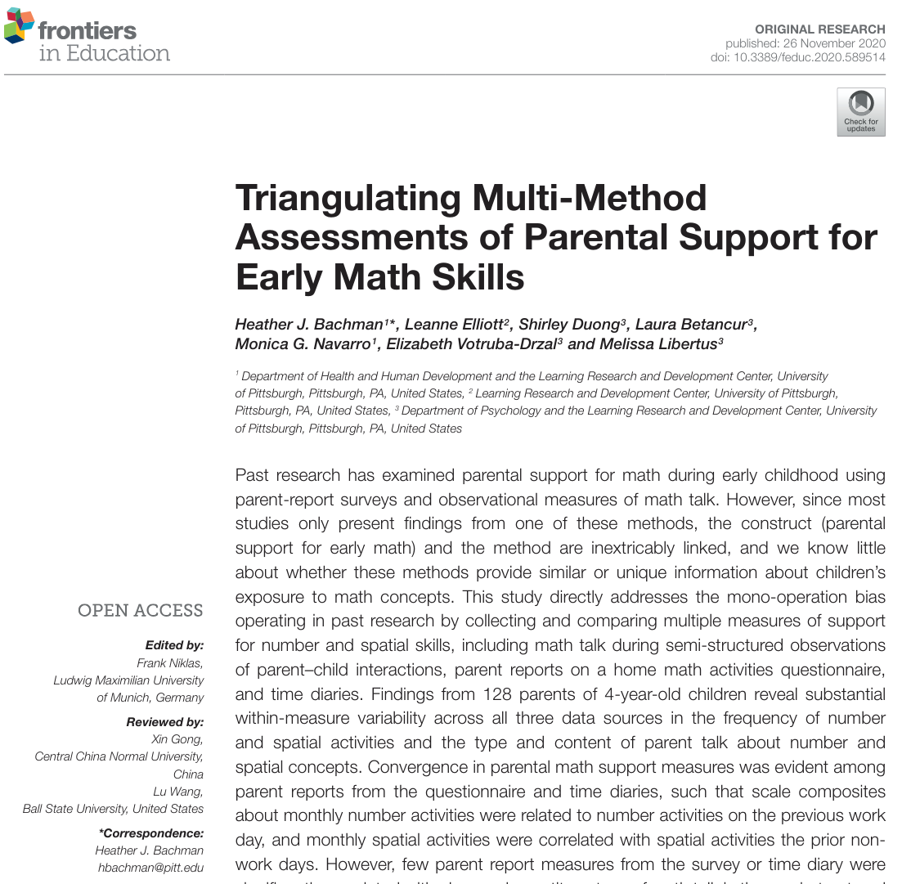

Μεθοδολογία Εκπαιδευτικής Έρευνας (0110Υ)
Χειμερινό εξάμηνο 2025-2026
2025-12-11
Ανακεφαλαίωση
Υπενθύμιση
| Ποσοτικές μέθοδοι | Ποιοτικές μέθοδοι |
|---|---|
| Αντικειμενική πραγματικότητα που πρέπει να ανακαλυφθεί | Ερμηνεία απόψεων των συμμετεχόντων |
| Μελέτη σχέσεων αιτίου-αιτιατού | Περιγραφή και κατανόηση σχέσεων |
| Διατύπωση και εξέταση υποθέσεων | Γενική υπόθεση που εστιάζεται στην πορεία |
| Τυχαία επιλογή συμμετεχόντων | Σκόπιμη επιλογή συμμετεχόντων |
Σχέδια ποσοτικής έρευνας
- έρευνα με ερωτηματολόγια
- έρευνα συσχέτισης
- αιτιολογική–συγκριτική έρευνα
- πειραματική έρευνα
- έρευνα ενός υποκειμένου
Σχέδια ποιοτικής έρευνας
- αφηγηματική έρευνα
- εθνογραφική έρευνα
- μελέτη περίπτωσης
Μικτές μέθοδοι
Εισαγωγικά
Η έρευνα μικτών μεθόδων συνδυάζει ποσοτικές και ποιοτικές προσεγγίσεις.
Στόχος η πληρέστερη κατανόηση ενός φαινομένου σε σύγκριση με τις μεμονωμένες προσεγγίσεις.
Σπάνια ένας/μία ερευνητής/τρια κατέχει επαρκείς γνώσεις, ώστε να εφαρμόσει και τις δύο ερευνητικές προσεγγίσεις.
Τύποι σχεδίων έρευνας μικτών μεθόδων
Οι πιο συχνοί τύποι σχεδιασμού είναι μικτών μεθόδων είναι:
- Το μοντέλο ΠΟΙΟΤ-ποσοτ (QUAL-quan)
- Το μοντέλο ΠΟΣΟΤ-ποιοτ (QUAN-qual)
- Το μοντέλο ΠΟΣΟΤ-ΠΟΙΟΤ (QUAN-QUAL)
Η μέθοδος που γράφεται με κεφαλαία έχει το μεγαλύτερο βάρος.
Όταν και οι δύο μέθοδοι γράφονται με κεφαλαία, τότε είναι ισοδύναμες.
Το μοντέλο ΠΟΙΟΤ-ποσοτ
Ονομάζεται και διερευνητικό σχέδιο με μικτές μεθόδους.
Τα ποιοτικά δεδομένα συλλέγονται πρώτα και έχουν μεγαλύτερο βάρος.
Ποιοτικό μέρος:
- Διερεύνηση με τη μορφή παρατηρήσεων και ανοιχτών συνεντέυξεων.
- Ένας συμμετέχοντας ή μικρή ομάδα συμμετεχόντων.
- Προσδιοπρίζονται έννοιες και πιθανές υποθέσεις.
Ποσοτικό μέρος:
- Προσδιορισμός μεταβλητών που προέκυψαν από την ποιοτική ανάλυση.
- Έλεγχος υποθέσεων
Παράδειγμα
Παράδειγμα
- Στόχος: Να μελετηθούν οι παιδαγωγικές αλληλεπιδράσεις μεταξύ δασκάλων και μαθητών.
- Βιντεοσκόπηση μαθήματος σε νηπιαγωγεία.
- Ερωτηματολόγια σε δασκάλους.
- Συνεντεύξεις με συμμετέχοντες δασκάλους.
- Μετατροπή (κωδικοποίηση) όσων συμβαίνουν στα βίντεο.
- Στατιστική ανάλυση των κωδικοποιημένων στοιχείων.
Παράδειγμα
Μεθοδολογία κωδικοποίησης:
- Απομαγνητοφώνηση
- Ανέλυσαν τον σκοπό του κάθε λόγου. Για παράδειγμα, μια φράση κωδικοποιούνταν ως “πρόσκληση για ιδέες”, “αιτιολόγηση” ή “Σύνδεση ιδεών”.
- Μοτίβα αλληλεπίδρασης:
- Ποιος μιλάει;
- Σε ποιον απευθύνεται;
- Το είδος της ερώτησης (ανοιχτή/κλειστή, με γνωστή απάντηση για το δάσκαλο)
Παράδειγμα
Ευρήματα:
- Οι δάσκαλοι ξεκινούσαν το 94.62% των διαλόγων. Τα παιδιά σπάνια έπαιρναν πρωτοβουλία.
- Παρόλο που οι δάσκαλοι έκαναν πολλές ανοιχτές ερωτήσεις (78%), η συντριπτική πλειοψηφία (74%) αφορούσε ερωτήσεις όπου ο δάσκαλος ήξερε ήδη την απάντηση.
- Ο πιο συχνός διάλογος ήταν: Ο δάσκαλος ρωτάει, το παιδί απαντάει, ο δάσκαλος κατευθύνει τη συζήτηση εκεί που θέλει. Έλειπε η κριτική σκέψη.
Παράδειγμα
Παράδειγμα
Ερευνητικά ερωτήματα:
- Πώς τα δημοτικά σχολεία εντάσσουν τη φυσική δραστηριότητα στην καθημερινότητα των παιδιών, πέρα από το τυπικό μάθημα της Φυσικής Αγωγής;
- Χρησιμοποιούν οι δάσκαλοι “διαλείμματα κίνησης” (brain breaks) μέσα στην τάξη;
- Υπάρχουν προγράμματα περπατήματος πριν το μάθημα;
- Τα σχολεία που έχουν περισσότερη γυμναστική, έχουν και καλύτερες ακαδημαϊκές επιδόσεις;
Παράδειγμα
Οι ερευνητές δεν μπορούσαν να φτιάξουν κατευθείαν ένα ερωτηματολόγιο, γιατί πολύ απλά δεν ήξεραν ποιες συγκεκριμένες δραστηριότητες έκαναν τα σχολεία.
Ποιοτικό μέρος:
- Πήραν συνεντεύξεις από μόλις 15 άτομα (διευθυντές, γυμναστές και δασκάλους τάξης).
- Ανακάλυψαν ότι τα σχολεία χρησιμοποιούν δημιουργικούς τρόπους άσκησης, όπως το πρωινό περπάτημα ή σταθμούς με όργανα γυμναστικής στις αίθουσες.
Οι πληροφορίες αυτές χρησιμοποιήθηκαν για να σχηματιστούν ερωτήσεις.
Παράδειγμα
Ποσοτικό μέρος:
- Βασισμένοι στις συνεντεύξεις, έφτιαξαν ένα ερωτηματολόγιο και το έστειλαν σε 247 εκπαιδευτικούς σε 22 διαφορετικά σχολεία.
- Μέτρησαν τη συχνότητα των διαλειμμάτων για φυσική δραστηριότητα.
- Εκτίμησαν τη συσχέτιση των ωρών γυμναστικής με την επίσημη βαθμολογία του σχολείου.
Παράδειγμα
Παράδειγμα
Ερώτημα:
Γνωρίζουν οι νηπιαγωγοί στο Χονγκ Κονγκ τον όρο «Σωματικός Γραμματισμός» (Physical Literacy);
Ο όρος «Σωματικός Γραμματισμός» είναι πολύ καινούργιος και άγνωστος. Αν έδιναν μόνο ένα ερωτηματολόγιο, οι δάσκαλοι μπορεί να απαντούσαν στην τύχη.
Παράδειγμα
Ποιοτικό μέρος:
- Πήραν συνεντεύξεις (ατομικές και ομαδικές) από 45 εκπαιδευτικούς (διευθυντές και νηπιαγωγούς).
- Οι περισσότεροι δάσκαλοι δεν ήξεραν τον όρο.
- Φάνηκε ότι οι δάσκαλοι εστιάζουν μόνο στο σώμα (π.χ. «να μάθει να πιάνει την μπάλα») και ξεχνούν το συναίσθημα (π.χ. «να αγαπήσει την κίνηση»).
Παράδειγμα
Ποσοτικό μέρος (επιβεβάιωση):
- Έδωσαν σύντομα ερωτηματολόγια με κλίμακα Likert (1-5) πριν και μετά τη συνέντευξη για να μετρήσουν το βαθμό εξοικείωσης με τον όρο.
- Ο μέσος όρος ήταν πολύ χαμηλός (2.22 στα 5).
Παράδειγμα
Συμπεράσματα:
- Παρόλο που οι νηπιαγωγοί δεν ήξεραν τον όρο «Σωματικός Γραμματισμός» (θεωρία), στην πράξη έκαναν δραστηριότητες κίνησης. Όμως τις έκαναν αποσπασματικά, όχι οργανωμένα.
- Οι συνεντεύξεις αποκάλυψαν γιατί δεν κάνουν περισσότερη γυμναστική:
- Έλλειψη χώρου (μικρές τάξεις).
- Πίεση από τους γονείς να κάνουν μόνο μαθήματα (ανάγνωση/γραφή) και όχι παιχνίδι.
Διερεύνηση
Διαδικασίες ανάλυσης και ερμηνείας αποτελεσμάτων:
- Εντοπισμός οργάνου: Συλλέγονται ποιοτικά δεδομένα για την κατανόηση των εννοιών που μας ενδιαφέρουν. Στη συνέχεια, εντοπισμός εργαλείων που θα μετρήσουν τις αντίστοιχες μεταβλητές.
- Ανάπτυξη οργάνου: Με βάση θέματα και απαντήσεις συμμετεχόντων δημιουργούνται αξιολογικές κλίμακες.
- Χρήση ακραίων περιπτώσεων: Ακραίες περιπτώσεις των ποιοτικών δεδομένων αναλύονται ποιοτικά.
Το μοντέλο ΠΟΣΟΤ-ποιοτ
Ονομάζεται και ερμηνευτικό σχέδιο με μικτές μεθόδους.
Τα ποσοτικά δεδομένα συλλέγονται πρώτα και έχουν μεγαλύτερο βάρος.
Ποσοτικό μέρος:
- Διαμόρφωση υπόθεσης, συλλογή και ανάλυση ποσοτικών δεδομένων.
- Τα αποτελέσματα του ποσοτικού μέρους καθορίζουν
Παράδειγμα
Παράδειγμα
Ερωτήματα:
- Λειτουργεί σωστά ο θεσμός του “coaching” (καθοδήγηση);
- Συμφωνούν οι δάσκαλοι και οι καθοδηγητές για το τι συμβαίνει μέσα στην τάξη;
Παράδειγμα
Ποσοτικό μέρος:
- Έκαναν μια μεγάλη δημοσκόπηση για να δουν τη γενική εικόνα
- Συμμετείχαν 947 δάσκαλοι, 49 καθοδηγητές και 189 διοικητικοί
Αποτελέσματα:
Μεγάλη διαφωνία μεταξύ των απαντήσεων των δασκάλων και των καθοδηγητών
Παράδειγμα
Φτιάχνετε σχέδια δράσης (action plans);
- Καθοδηγητές: ΝΑΙ (91%)
- Νηπιαγωγοί: ΝΑΙ (51%)
Πώς γίνεται αυτό;
Παράδειγμα
Ποιοτικό μέρος (Επεξήγηση):
- Αποστολή σε όλους τους συμμετέχοντες ερωτηματολογίων με ανοιχτές ερωτήσεις.
Κατάλαβαν ότι οι καθοδηγητές και οι νηπιαγωγοί ορίζουν διαφορετικά τις λέξεις:
- Για τον καθοδηγητή, μια απλή προφορική συζήτηση θεωρούταν “Σχέδιο”.
- Για το νηπιαγωγό, αν δεν υπήρχε γραπτό χαρτί με βήματα, δεν το θεωρούσε “Σχέδιο”.
Παράδειγμα
Παράδειγμα
Οι ερευνητές εστίασαν σε σχολεία που ήταν γεμάτα με τεχνολογία. Ήθελαν να δουν αν η αφθονία υπολογιστών αλλάζει τον τρόπο που σκέφτονται και διδάσκουν οι δάσκαλοι.
Συγκεκριμένα: Αν δώσουμε σε έναν παραδοσιακό δάσκαλο (δασκαλοκεντρικό) πολλούς υπολογιστές, θα γίνει πιο μοντέρνος και μαθητοκεντρικός; Ή μήπως θα συνεχίσει να διδάσκει με τον ίδιο τρόπο, απλά χρησιμοποιώντας την οθόνη αντί για τον πίνακα;
Παράδειγμα
Ποσοτικό μέρος:
- Δείγμα 113 νηπιαγωγών
- Χρήση οργάνων (ερωτηματολόγια) από τη βιβλιογραφία για:
- την αξιολόγηση των πεποιθήσεων των νηπιαγωγών για την δασκαλοκεντρική και την μαθητοκεντρική μάθηση
- την αυτο-αξιολόγηση των νηπιαγωγών ως προς τη χρήση της τεχνολογίας
Παράδειγμα
Ποιοτικό μέρος:
- Χρήση του μοντέλου της μελέτης περίπτωσης.
- Επιλογή των δύο πιο “ακραίων” νηπιαγωγών με βάση τα ποσοτικά στοιχεία.
- Ζητήθηκε από κάθε νηπιαγωγό:
- Παρατήρηση του μαθήματος από τους ερευνητές.
- Συνέντευξη
- Σχέδιο μαθήματος.
- Γραπτός αναστοχασμός πάνω σε ερωτήσεις ανοιχτού τύπου για τις εκπαιδευτικές τους πεποιθήσεις και πρακτικές.
Παράδειγμα
Ευρήματα:
- Το τι πίστευε ο δάσκαλος δεν προέβλεπε σωστά το πώς χρησιμοποιούσε την τεχνολογία.
- Η τεχνολογία δεν άλλαξε τον τρόπο που δίδασκαν. Ο κάθε νηπιαγωγός προσάρμοσε την τεχνολογία για να ταιριάξει στην προσέγγιση που ήδη είχε.
Επεξήγηση
Διαδικασίες ανάλυσης και ερμηνείας αποτελεσμάτων:
- Ακολουθιακή ανάλυση ακραίων περιπτώσεων: Συλλέγονται ποσοτικά δεδομένα και προσδιορίζονται απόμακρες τιμές. Οι ακραίες περιπτώσεις μελετώνται ποιοτικά.
- Επεξήγηση αποτελεσμάτων: Μετά τη συλλογή των ποσοτικών δεδομένων συλλέγονται ποιοτικά δεδομένα (συνήθως) με συνεντέυξεις για να διερυενηθούν οι λόγοι που παρατηρήθηκαν οι διαφορές.
- Πολυεπίπεδη επεξήγηση: Ποσοτική έρευνα σε επίπεδο νηπιαγωγείου και συλλογή ποιοτικών δεδομένων σε επίπεδο περιφέρειας.
Το μοντέλο ΠΟΣΟΤ-ΠΟΙΟΤ
- Ονομάζεται και τριγωνοποιητικό σχέδιο με μικτές μεθόδους.
- Τα ποσοτικά και τα ποιοτικά δεδομένα έχουν την ίδια βαρύτητα.
- Τα ποσοτικά και τα ποιοτικά δεδομένα συλλέγονται συγχρόνως.
- Είναι ο πιο απαιτητικός τύπος μικτής έρευνας
Παράδειγμα
Παράδειγμα
Ερώτημα:
Πόσο συχνά οι γονείς ασχολούνται με τα μαθηματικά στο σπίτι με τα 4-χρονα παιδιά τους;
Παράδειγμα
Διαδικασία συλλογής δεδομένων:
- Επίσκεψη στο σπίτι και βιντεοσκόπηση.
- Αμέσως μετά συμπλήρωση ερωτηματολογίου.
- Αναφορά δραστηριοτήτων από το τηλέφωνο σε δύο διαφορετικές μέρες (εργάσιμη/όχι εργάσιμη).
Παράδειγμα
| Μέθοδος 1: Ερωτηματολόγιο (QUAN) |
Μέθοδος 2: Αναφορά δραστηριοτήτων (QUAN/QUAL) |
Μέθοδος 3: Παρατήρηση (Video) (QUAL) |
|
|---|---|---|---|
| Εργαλείο | “Πόσο συχνά μετράτε;” (Κλίμακα 1-5) |
“Περιγράψτε τη μέρα σας λεπτό προς λεπτό.” |
Βιντεοσκόπηση παιχνιδιού (Μανάβικο & Παζλ) |
| Εύρημα | Οι γονείς δηλώνουν συχνή ενασχόληση. | Τα μαθηματικά εμφανίζονται σπάνια (μόλις 1% του χρόνου). | Καμία συσχέτιση με τις αναφορές των γονιών! |
| Ερμηνεία | Υποκειμενικότητα (Οι γονείς θέλουν να είναι αρεστοί) |
Ρεαλισμός (Η πραγματική ρουτίνα) |
Αντικειμενικότητα (Η ικανότητα στην πράξη) |
Τριγωνοποίηση
Ορισμός
Ταυτόχρονη συλλογή ποιοτικών και ποσοτικών δεδομένων.
Πιθανές διαδικασίες ανάλυσης που μπορούν να ακολουθηθούν:
- Ποσοτικοποίηση ποιοτικών δεδομένων.
- Ποιοτικοποίηση ποσοτικών δεδομένων.
- Σύγκριση αποτελεσμάτων.
- Ενοποίηση δεδομένων: Τα ποσοτικά και τα ποιοτικά συναρθρώνονται με στόχο να προκύψουν νέες μεταβλητές.

Μεθοδολογία Εκπαιδευτικής Έρευνας: 10ο Μάθημα